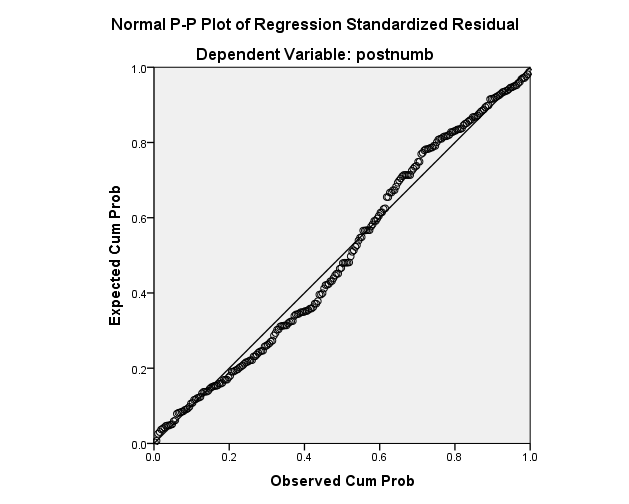
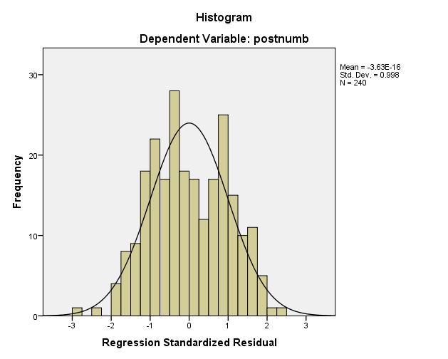
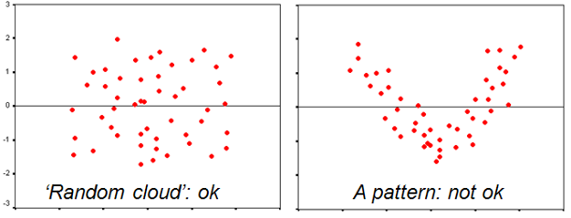

The General Linear Model (GLM) is a family of models used to analyze the relationship between an outcome variable and one or more predictors. In this lecture, we will focus on bivariate linear regression, which describes a linear relationship between a continuous outcome variable and a continuous predictor. However, it’s important to note that the GLM encompasses other members that can handle predictors of any measurement level (continuous or categorical), multiple predictors, transformations of the outcome and predictors, and different error distributions.
Linear regression is based on the concept of using information about other variables associated with the outcome to improve predictions. It begins with the understanding that the mean is the best predictor (expected value) when no further relevant information is available. However, if we have information about other variables, such as the number of hours studied being strongly associated with exam grades, we can use that information to enhance our predictions. This process is known as regression.
To visually explore associations between two variables, we often use scatterplots. Scatterplots require both variables to be at least of ordinal measurement level. By plotting the data points, we can observe whether there is a linear pattern or trend. In linear regression, we aim to find a line that represents the best possible predictions. This line, called the regression line, goes through the middle of the cloud of data points.
The regression line is described by the formula Y = a + bX, where “a” is the intercept (the predicted value when X equals 0) and “b” is the slope (how steeply the line increases or decreases). The predictions made using the regression line are not identical to the observed values, as there is always some prediction error. The Ordinary Least Squares method is used to obtain the line that minimizes the sum of squared prediction errors.
In a bivariate regression, the regression formula expands to include the individual prediction error, assuming that the errors are normally distributed around the regression line with a mean of zero. The regression model is represented as Yi = a + b * Xi + ei, where Yi is the individual’s score on the dependent variable, a is the intercept, b is the slope, Xi is the individual’s score on the independent variable, and ei is the individual prediction error.
Hypothesis tests can be conducted on the regression coefficients to determine their significance. The default null hypothesis for the intercept is that it is equal to zero, while the null hypothesis for the slope is also zero. The t-test is commonly used, with the degrees of freedom being n - p, where n is the sample size and p is the number of parameters. By testing the coefficients, we can determine the statistical significance of the relationship between the predictor and the outcome.
While linear regression offers valuable insights, it is essential to consider the assumptions underlying the model. These assumptions include linearity of the relationship between the predictor and the outcome, normality of residuals (prediction errors), homoscedasticity (equal variance of residuals), and independence of observations. Violations of these assumptions can affect the validity of the model and lead to misleading results. Checking and addressing these assumptions is crucial for accurate and reliable regression analysis.
Linear regression is a powerful tool for analyzing the relationship between variables, and a building block for many more advanced analysis techniques. It allows us to make predictions based on available information and understand the strength and significance of the relationship between a continuous predictor and continuous outcome. By considering the assumptions and conducting hypothesis tests, we can ensure the validity of our regression models and draw meaningful conclusions from the analysis.
7 Lecture
8 Formative Test
A formative test helps you assess your progress in the course, and helps you address any blind spots in your understanding of the material. If you get a question wrong, you will receive a hint on how to improve your understanding of the material.
Complete the formative test ideally after you’ve seen the lecture, but before the lecture meeting in which we can discuss any topics that need more attention
Question 1
What is the General Linear Model (GLM)?
Question 2
What type of relationship does bivariate linear regression describe?
Question 3
What does it mean when we say ‘The mean is the best predictor when there’s no further relevant information’ in the context of regression?
Question 4
What is the purpose of a scatterplot in the context of regression analysis?
Question 5
What is the primary goal of ordinary least squares regression in linear modeling?
Question 6
In the formula ‘Yi = a + bXi + ei’, what are the parameters?,
Question 7
How are the coefficients ‘a’ and ‘b’ interpreted in the context of linear regression?
Question 8
What is the purpose of checking assumptions in linear regression?
Question 9
What is the assumption of homoscedasticity?
Question 10
Given regression formula Yi = 65.13 + 95.27*Xi+ei, what is the predicted score for a person who scores 15 on X?
Question 11
Frank scores 22 on Yi and has a prediction error of 7.33. What was his predicted value, given regression formula Yi = 65.13 + 95.27*Xi+ei?
Question 1
The GLM is used to analyze the relationship between a single outcome and one or more predictors.
Question 2
Bivariate linear regression specifically describes a linear relationship between two continuous variables.
Question 3
When there’s no further information available, the mean is the most reasonable estimate for the outcome.
Question 4
Scatterplots visually depict the relationships and associations between two variables.
Question 5
Ordinary least squares regression aims to minimize the sum of squared prediction errors to find the best-fitting line.
Question 6
The parameters of a model are the quantities estimated from data. Yi and Xi are the data; ei is calculated based on the model-implied predictions.
Question 7
The coefficient ‘a’ represents the intercept, and the coefficient ‘b’ represents the slope of the regression line.
Question 8
Assumption checks ensure that the model accurately represents the data and that any inferences drawn from the model are valid.
Question 9
Homoscedasticity literally means: equal variances; this assumption means that the variance of prediction errors is equal at all values of the predictor.
Question 10
65.13 + 95.27*15 = 1494.18
Question 11
The observed score Yi is equal to the predicted score plus prediction error. If prediction error was 7.33, the predicted score must have been 22-7.33 = 14.67
9 In SPSS
9.1 Linear Regression
10 Tutorial
10.1 Regression Analysis
In this assignment we will make a start with regression analysis.
We will go through the different steps of running and interpreting a regression analysis.
Open the file Work.sav to get started.
Consider the following research question: “Does variety at work predict pleasure at work?”
What is the dependent variable in this case?
To answer the research question, we will run a linear regression analysis.
Select the following menu item: Analyze > Regression > Linear
Choose the dependent variable (scpleasure) and independent variable (scvariety). Paste and run the syntax.
If you look in the output, you will see that SPSS shows four tables in the output file.
In the table labeled “Model Summary” we can find the R2 value. R2 indicates the total proportion of explained variance in the dependent variable in the model; this is the focus of next week’s class.
What proportion of the variance Emotional pressure (scpleasure) is explained by our single predictor Variety at work (scvariety)?
Consider the unstandardized Coefficients in the table labeled “Coefficients”.
What is the value of the intercept (b0) for the regression line?
How should we interpret the intercept (or “constant”) within the context of this analysis?
Consider the unstandardized regression coefficients again.
What is the value of the regression coefficient of scpleasure on scemoti (b1)?
How should we interpret the regression coefficient of scvariety within the context of this analysis?
The “Coefficients” table also shows whether or not the effect of scvariety on scpleasure is significant.
What is the p-value for the regression coefficient for scvariety?
Can we conclude that the effect of scvariety on scpleasure is significant? (use \(\alpha\) = .05).
10.2 Assumptions
Recall that regression assumes linearity, normality of residuals, homoscedasticity (equal variance of residuals), and independence of observations. We will check each of these assumptions in turn, except for independence of observations because this is a property of our sampling method and cannot be checked statistically.
10.2.1 Scatterplot
A scatter plot can provide some insight into linearity.
To make a scatter plot: Graphs > Legacy Dialogs > Scatter/Dot > Simple Scatter
Place variety at work on the X axis and emotional pressure on the Y axis.
Is the assumption of linearity met in this case?
10.2.2 Regression Diagnostics
Aside from the scatterplot, we can check the assumptions of regression by requesting additional options in the analysis.
Go back to the analysis dialog via Analyze –> Regression –> Linear. Verify that you still have the correct predictor and outcome.
Then, click the Plots button. You want a plot of the predicted values against the residual values, so put ZPRED in the X box and ZRESID in the Y box.
Also check the boxes for a Histogram and normal probability plot, then hit continue.
Now paste and run the syntax. You should see the following added to your previous regression syntax:
How can we test linearity using this additional output?
First, we can use the “Normal P-P plot”. If the relationship is perfectly linear, all dots should be on the diagonal line. If the points are deviating from the line, the relationship is not perfectly linear. Small deviations are OK; for example, the plot below shows a linear association:

Does the P-P plot for your regression give cause for concern for violation of the assumption of linearity?
10.2.4 Normality
One way to check normality is by examining the histogram of residuals. This histogram displays a normal curve by default. If the observed residuals deviate strongly from this histogram, there may be a problem.
The plot below shows a residual histogram with some minor deviations from normality (too few scores near the mean). This is probably still fine:

Does the residual histogram for your regression give cause for concern for violation of the assumption of normal residuals?
10.2.5 Homoscedasticity
We examine homoscedasticity using a plot of standardized predicted values against standardized residuals. We want residuals to be identically distributed on the Y-axis for all values on the X-axs. In other words, this scatterplot should look like a dot cloud (no pattern) around the zero line (left picture below), and not like a pattern (right picture below).

Does the scatterplot for standardized predicted values against residual values for your regression give cause for concern for violation of the assumption of homoscedasticity?
Write up a discussion of potential violations of the assumptions for your regression, then check your answer.
We observed that the observed scores deviated from the P-P plot in an S-shaped pattern. We further observed that, in a histogram of standardized residuals, the observed residuals were right-skewed. Finally, we observed less variance around the regression line for low scores and more variance around the regression line for high scores.
These findings give cause for concern of violations of the assumptions of regression. One potential explanation is that the effect might be quadratic instead of linear. (Optional)